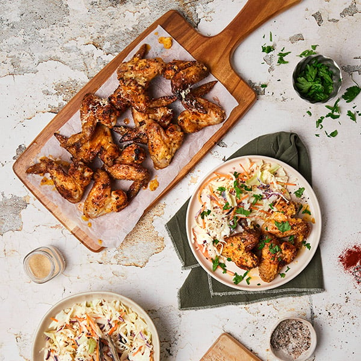

Garlic Parmesan Wings

Description
Sensationally succulent garlic butter parmesan wings are so tempting you won’t be able to stop at just one.
Packed full of garlicky goodness and garnished with parsley for a touch of freshness they’re fabulous on their
own or served with your favourite slaw or side salad.
Ingredients
- 1 kg chicken wings
- 1 Tbsp garlic powder
- 40g butter
- 2 cloves garlic, minced
- ½ cup parmesan, grated
- Large handful of parsley, roughly chopped
Steps
- Preheat your oven to 200°C fan bake.
- Pat the chicken wings dry with a paper towel and place in a large bowl.
- Add the garlic powder, season with salt and pepper and toss to combine. Arrange on an oiled wire rack on top
of a baking tray. Bake for 30-35 minutes or until golden brown and cooked through.
- In a small saucepan, melt the butter over medium heat. Add the garlic and cook for a minute or until
fragrant. Place the wings in a large bowl and pour the garlic butter over top. Add the parmesan and toss to
coat.
- Transfer to a large platter or plate, garnish with parsley and serve.